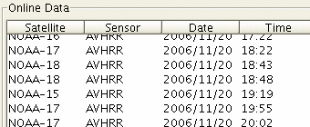

CoastWatch Status Tool Help: Online data
The online data panel shows details for the current satellite
datasets on the server:

The following information is displayed:
- Satellite
- The satellite name. Satellite names are short
abbreviations given by the agency responsible for launching the
satellite.
- Sensor
- The satellite sensor. Most satellites have multiple
sensors on board, each with a different observational
purpose.
- Date and Time
- The date and time of the satellite data referenced from
Greenwich Mean Time (GMT). The date format is given as
YYYY/MM/DD and time as 24-hour HH:MM.
- Scene
- The scene time. This indicates that the data coverage is
either fully daytime, fully nighttime, or mixed day and night
if the data spans the solar terminator.
- Orbit
- The orbit type. This indicates that the satellite was
travelling northward (ascending) or southward (descending)
while the data was observed.
- Lines
- The number of data lines (rows) which indicates the pass
duration for polar orbiting satellites.
- Station
- The ground capture station responsible for receiving the
satellite data.
You can select a dataset of interest by clicking a line in the
table. Once selected, the data coverage and preview displays
change to show the characteristics of the new dataset. The table
contents may be re-sorted based on a specific column by clicking
on the column header. The table is originally sorted by
date.
Back to overview